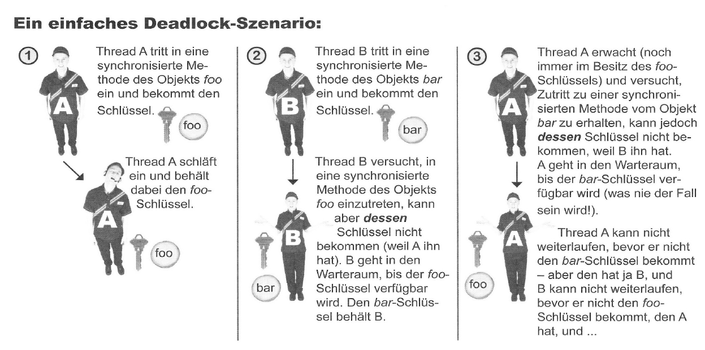

Vorlesung 4 - Threads
 26.04.2021
26.04.2021
Threads Teil 2
Montag, 13 Uhr - Zeit für eine weitere Vorlesung "Verteilte Systeme".
Fortsetzung zum Thema Threads
Das Hauptthema dieser Vorlesung waren Threads. Begonnen haben wir mit einer kurzen Wiederholung der Inhalte der letzten Vorlesung. Dann kamen wir zum nächsten Thema, denn wie alles sind auch Threads nicht ohne Fehler.
Nebenläufigkeitsprobleme
Wie der Titel es schon anzeigt, kann es bei Threads zu Nebenläufigkeitsproblemen kommen. Diese treten auf, wenn zwei oder mehr Threads mit den gleichen Heap-Objekten arbeiten und führen im schlimmsten Fall zu verfälschten Daten. Im Skript wird dieses Phänomen auch als "Die-linke-Hand-weiß-nicht-was-die-rechte-tut-Geschichte" bezeichnet. Und nicht nur das. Auch ein Thread selbst weiß nicht, ob er zwischen verschiedenen Statements nicht mal kurz blockiert war und sich in der Zwischenzeit Daten geändert haben.
In der Vorlesung wurde uns dazu das "Bank-Problem" erläutert. Dabei geht es um ein Ehepaar, welches das gemeinsame Konto nicht überziehen will. Der Ehemann, Reiner, überprüft also zuerst den Kontostand. Auf dem Konto sind noch
100€. Er braucht lediglich 50€. Bevor er das Geld nun aber abheben geht, schläft er kurz ein. Seine Frau Monika überprüft nun auch den Kontostand. Sie sieht, dass noch 100€ darauf sind, und hebt diese ab. Nun wacht Reiner auf, ohne bewusst war zunehmen,
dass er geschlafen hat und hebt 50€ vom Konto ab. Er hatte ja aus seiner Sicht gerade erst überprüft wie viel Geld sich darauf befindet.
Und schon ist es geschehen, das Konto ist überzogen.
Sich um solche Nebenläufigkeitsprobleme zu kümmern ist Aufgabe des Entwicklers. Eine in der Vorlesung behandelte Möglichkeit ist die Verwendung von "synchronyzed". Durch die Verwendung dieses Schlüsselwortes können wir eine Methode bzw. in der Folge ein ganzes Objekt so modifizieren, dass immer nur ein Thread auf einmal auf sie bzw. es zugreifen kann. Unsere Analogie dazu aus der "realen Welt" war eine Art Verschließen der Methode. Man schließt die Methode ab und nimmt den Schlüssel bis zum Ende der Ausführung an sich. Interessant ist dabei außerdem, dass es für ein Objekt nur ein Schloss bzw. einen Schlüssel gibt. Auch wenn es zwei oder mehr synchronisierte Methoden in einem Objekt gibt, kann immer nur ein Thread auf diese zugreifen, da diese unter Umständen mit den gleichen Daten arbeiten.
Anschließend haben wir noch kurz über das "Problem der verlorenen Aktualisierung" gesprochen welches eine Spezialform des bereits erwähnten Problems darstellt. Es entsteht, wenn Änderungen an Objekten nicht atomar sind, sondern beispielsweise in Etappen geschehen. Das Beispiel aus der Vorlesung war eine Variable, die erhöht werden sollte indem sie erst in einer lokalen Variable zwischengespeichert wurde und anschließend diese Variable der Ursprungsvariable als Wert + 1 zugewiesen wurde.
public void inkrementieren() {
int i = kontostand;
kontostand = i + 1;
}
Wenn auf diese Methode nun unterschiedliche Threads zu unterschiedlichen Zeiten zugreifen, ist das Chaos vorprogrammiert.
Thread Deadlocks
Ein weiteres Problem bei Multithreading sind sogenannte Deadlocks. Dabei blockieren sich synchronisierte Methoden gegenseitig bei der Ausführung. Diesen Vorgang kann man am besten im untenstehenden Bild nachvollziehen.
Erzeuger/Verbraucher-Problem
Das letzte der betrachteten Probleme mit Threads war das Erzeuger/Verbraucher-Problem. Dieses entsteht, wenn zwei oder mehr Threads Daten über einen Puffer-Speicher austauschen. So kann es vorkommen, dass Verbraucher schon versuchen auf neue Daten zuzugreifen, obwohl diese noch nicht oder noch ältere Werte vorliegen. Auch hier führt dies wieder zu verfälschten bzw. unvollständigen Daten.
Die in der Vorlesung kurz vorgestellte Lösung beinhaltete die "Thread Kommunikation". Nutzt man diese, sind die Threads in der Laage sich "vorzudrängeln" (mit der join() oder join(ling mullis) Methode), aufeinander zu warten (mit der wait() oder wait(long timeout) Methode) oder
andere Threads zu benachtichtigen, wenn sie die Ausführung beendet haben (mit der notify() oder notifyAll() Methode).
Auch hier packe ich wieder den Link zur offiziellen Java Dokumentation dazu: java.lang.Object
Aufgaben
Aber genug der grauen Theorie, auf zu den Praxisaufgaben. Diese wurden dieses Mal tatsächlich beide Mitten in der Vorlesung behandelt. Aus Gründen der Übersichtlichkeit habe ich sie allerdings beide hier ans Ende gezogen.
Zwei Threads
Die erste Aufgabe war zwei Threads gleichzeitig laufen zu lassen und durch Log Befehle nachzuvollziehen, wann welcher Thread aktiv ist. Der Code und das Video der Ausführung kann man hier runter sehen.
package Threading;
public class ZweiThreads implements Runnable {
public static void main(String[] args){
ZweiThreads aufgabe = new ZweiThreads();
Thread alpha = new Thread(aufgabe);
Thread beta = new Thread(aufgabe);
alpha.setName("Alpha Thread");
beta.setName("Beta Thread");
alpha.start();
beta.start();
}
public void run(){
for (int i = 0; i < 25; i++){
String threadName = Thread.currentThread().getName();
System.out.println("Jetzt läuft der " + threadName);
}
}
}
Chat Client/Server
Bei dieser Aufgabe ging es darum, aus dem TippDesTages Client und Server aus der letzten Vorlesung mit Hilfe von Threads einen einfachen Chat Client zu machen. Der Client sollte dabei mit einem Thread permanent auf Nachrichten lauschen und einem anderen Nachrichten senden. Der Server sollte auch auf Nachrichten lauschen diese dann jedoch an alle verbundenen Clients weiterleiten.
Der fertige Quellcode sah dann folgendermaßen aus.
Client
package EinfacherChat;
import java.awt.event.ActionEvent;
import java.awt.event.ActionListener;
import java.io.BufferedReader;
import java.io.IOException;
import java.io.InputStreamReader;
import java.io.PrintWriter;
import java.net.Socket;
import javax.swing.*;
import java.awt.*;
public class EinfacherChatClient {
JTextArea txtEingehend;
JTextField txtAusgehend;
JTextField txtUsername;
BufferedReader reader;
PrintWriter writer;
Socket sock;
public static void main(String[] args) {
EinfacherChatClient client = new EinfacherChatClient();
client.los();
}
public void los() {
// Frame
JFrame frame = new JFrame("Lächerlich einfacher Chat-Client");
JPanel hauptPanel = new JPanel();
// Textfeld für eingehende Kommunikation
txtEingehend = new JTextArea(15,20);
txtEingehend.setLineWrap(true);
txtEingehend.setWrapStyleWord(true);
txtEingehend.setEditable(false);
JScrollPane fScroller = new JScrollPane(txtEingehend);
fScroller.setVerticalScrollBarPolicy(ScrollPaneConstants.VERTICAL_SCROLLBAR_ALWAYS);
fScroller.setHorizontalScrollBarPolicy(ScrollPaneConstants.HORIZONTAL_SCROLLBAR_NEVER);
// Textfeld für ausgehende Kommunikation und Label
txtAusgehend = new JTextField(20);
JLabel lblUsername = new JLabel("Username: ");
txtUsername = new JTextField(20);
// Senden Button
JButton btnSenden = new JButton("Senden");
btnSenden.addActionListener(new SendenButtonListener());
// Elemente zum Panel hinzufügen
hauptPanel.add(lblUsername);
hauptPanel.add(txtUsername);
hauptPanel.add(fScroller);
hauptPanel.add(txtAusgehend);
hauptPanel.add(btnSenden);
// Netzwerkverbindung bereit machen
netzwerkEinrichten();
// Neuen Thread starten
Thread readerThread = new Thread(new EingehendReader());
readerThread.start();
frame.getContentPane().add(BorderLayout.CENTER, hauptPanel);
frame.setSize(400,500);
frame.setVisible(true);
frame.setDefaultCloseOperation(JFrame.EXIT_ON_CLOSE);
}
private void netzwerkEinrichten(){
try {
sock = new Socket("91.210.226.120", 5020);
InputStreamReader streamReader = new InputStreamReader(sock.getInputStream());
reader = new BufferedReader(streamReader);
writer = new PrintWriter(sock.getOutputStream());
System.out.println("Netzwerkverbindung steht");
} catch(IOException ex){
ex.printStackTrace();
System.out.println("Fehler bei der Netzwerkverbindung");
}
}
public class SendenButtonListener implements ActionListener {
@Override
public void actionPerformed(ActionEvent e) {
try {
writer.println(txtUsername.getText() + ": " + txtAusgehend.getText());
writer.flush();
} catch(Exception ex){
ex.printStackTrace();
System.out.println("Fehler beim Senden");
}
txtAusgehend.setText("");
txtAusgehend.requestFocus();
}
}
public class EingehendReader implements Runnable{
public void run() {
String nachricht;
try{
while ((nachricht = reader.readLine()) != null) {
System.out.println("gelesen: " + nachricht);
txtEingehend.append(nachricht + "\n");
}
} catch(Exception ex) {
ex.printStackTrace();
}
}
}
}
Server
package EinfacherChat;
import java.io.*;
import java.net.*;
import java.util.*;
public class EinfacherChatServer {
ArrayList clientAusgabeStroeme;
public class ClientHandler implements Runnable {
BufferedReader reader;
Socket sock;
public ClientHandler(Socket clientSocket){
try {
sock = clientSocket;
InputStreamReader isReader = new InputStreamReader(sock.getInputStream());
reader = new BufferedReader(isReader);
} catch (Exception ex){
ex.printStackTrace();
}
}
public void run() {
String nachricht;
try {
while ((nachricht = reader.readLine()) != null) {
System.out.println("gelesen: " + nachricht);
esAllenWeitersagen(nachricht);
}
} catch (Exception ex) {
ex.printStackTrace();
}
}
}
public static void main (String[] args) {
new EinfacherChatServer().los();
}
public void los(){
clientAusgabeStroeme = new ArrayList();
try {
ServerSocket serverSock = new ServerSocket(5020);
while(true){
Socket clientSocket = serverSock.accept();
PrintWriter writer = new PrintWriter(clientSocket.getOutputStream());
clientAusgabeStroeme.add(writer);
Thread t = new Thread(new ClientHandler(clientSocket));
t.start();
System.out.println("habe eine Verbindung");
}
} catch (Exception ex){
ex.printStackTrace();
}
}
public void esAllenWeitersagen(String nachricht) {
Iterator it = clientAusgabeStroeme.iterator();
while(it.hasNext()){
try {
PrintWriter writer = (PrintWriter) it.next();
writer.println(nachricht);
writer.flush();
} catch (Exception ex) {
ex.printStackTrace();
}
}
}
}
Video der Ausführung
Im nachfolgenden Video kann man den Code nun in Aktion sehen. Hier habe ich mich wohlgemerkt nicht mit meinem eigenen Server verbunden, sondern mit dem Server eines Kommilitonen. So kann man im Videostream von Herrn Noll sehen, dass meine Nachrichten auch tatsächlich bei anderen Teilnehmern ankamen.